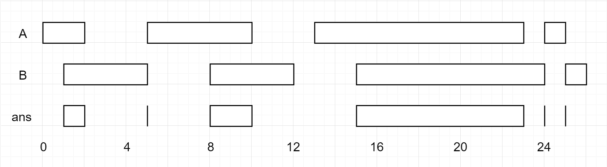

986. 区间列表的交集
双指针各扫一个列表：当前两区间的交集 = max 起点到 min 终点（非空就收下）；谁的终点小谁前进。
思路
- 两个列表都已排序且内部不相交，所以交区间也会按序产出，双指针一遍即可。
- 交集
[max(start), min(end)]：lo <= hi才算相交，端点相接（如[5,5]）也算。 - 算完比较两端终点：终点小的指针前进——它已被当前对手完全覆盖，不可能再相交。
- 一方扫完就结束：剩下的区间不会再有交集。
图解
最优解
1import java.util.*;2 3class Solution {4 public int[][] intervalIntersection(int[][] firstList, int[][] secondList) {5 List<int[]> ans = new ArrayList<>();6 int i = 0, j = 0;7 while (i < firstList.length && j < secondList.length) {8 // 交集：起点取较大者，终点取较小者9 int lo = Math.max(firstList[i][0], secondList[j][0]);10 int hi = Math.min(firstList[i][1], secondList[j][1]);11 if (lo <= hi) ans.add(new int[]{lo, hi});12 // 谁的终点小，谁前进：它对后面的区间不再有贡献13 if (firstList[i][1] < secondList[j][1]) i++;14 else j++;15 }16 return ans.toArray(new int[0][]);17 }18}题目
给定两个由一些 闭区间 组成的列表，firstList 和 secondList ，其中 firstList[i] = [starti, endi] 而 secondList[j] = [startj, endj] 。每个区间列表都是成对 不相交 的，并且 已经排序 。
返回这 两个区间列表的交集 。
形式上，闭区间 [a, b]（其中 a <= b）表示实数 x 的集合，而 a <= x <= b 。
两个闭区间的 交集 是一组实数，要么为空集，要么为闭区间。例如，[1, 3] 和 [2, 4] 的交集为 [2, 3] 。
示例 1：

输入：firstList = [[0,2],[5,10],[13,23],[24,25]], secondList = [[1,5],[8,12],[15,24],[25,26]] 输出：[[1,2],[5,5],[8,10],[15,23],[24,24],[25,25]]
示例 2：
输入：firstList = [[1,3],[5,9]], secondList = [] 输出：[]
示例 3：
输入：firstList = [], secondList = [[4,8],[10,12]] 输出：[]
示例 4：
输入：firstList = [[1,7]], secondList = [[3,10]] 输出：[[3,7]]
提示：
0 <= firstList.length, secondList.length <= 1000firstList.length + secondList.length >= 10 <= starti < endi <= 109endi < starti+10 <= startj < endj <= 109endj < startj+1
题面取自力扣当前版本。
数据快照 2026-11-04。题面版权归力扣所有，本站点仅供本人学习使用，请勿对外发布。